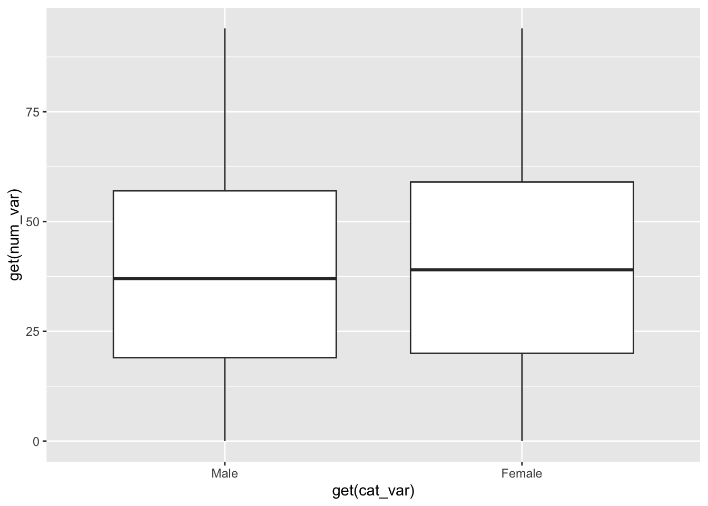

In this project, we built custom R functions to pull and analyze census data from the American Community Survey (ACS) Public Use Microdata Sample (PUMS). We created a function to access the Census API, generic methods for summarizing and plotting the data, and a wrapper function to compare multiple years. Finally, we applied these functions to explore the working-age population of Illinois.
library(tidyverse)
── Attaching core tidyverse packages ──────────────────────── tidyverse 2.0.0 ──
✔ dplyr 1.1.4 ✔ readr 2.1.5
✔ forcats 1.0.0 ✔ stringr 1.5.1
✔ ggplot2 3.5.2 ✔ tibble 3.3.0
✔ lubridate 1.9.4 ✔ tidyr 1.3.1
✔ purrr 1.1.0
── Conflicts ────────────────────────────────────────── tidyverse_conflicts() ──
✖ dplyr::filter() masks stats::filter()
✖ dplyr::lag() masks stats::lag()
ℹ Use the conflicted package (<http://conflicted.r-lib.org/>) to force all conflicts to become errors
library(DBI)library(httr)library(jsonlite)
Attaching package: 'jsonlite'
The following object is masked from 'package:purrr':
flatten
library(dplyr)library(hms) # for time variables like JWAP/JWDP
Attaching package: 'hms'
The following object is masked from 'package:lubridate':
hms
Read in Data from API
We want to create a function that will pull real data directly from the Census Bureau’s ACS PUMS API. This function, called get_census_data(), allows us to pick the survey year, numeric variables, and categorical variables we are interested in. The function cleans the output so numeric variables are stored as numbers, categorical variables are stored as factors, and the weight variable (PWGTP) is always included. We also add a “census” class to the tibble so our custom summary and plot functions can use it later. By calling this function, we are able to quickly pull live census data into R for analysis.
library(httr)library(jsonlite)library(dplyr)library(stringr)library(hms) # for proper time typeget_census_data <-function(year =2022,num_vars =c("AGEP", "PWGTP"), cat_vars =c("SEX"),geo_level ="state", geo_code ="17") {# Year checkif (year <2010| year >2022) {stop("Year must be between 2010 and 2022") }# Ensure PWGTP is includedif (!"PWGTP"%in% num_vars) { num_vars <-c(num_vars, "PWGTP") }# Allowed variables allowed_num <-c("AGEP", "GASP", "GRPIP", "JWAP", "JWDP", "JWMNP", "PWGTP") allowed_cat <-c("FER", "HHL", "HISPEED", "JWTRNS", "SCH", "SCHL", "SEX")# Validate numeric varsfor (i in num_vars) {if (!(i %in% allowed_num)) {stop(paste0("Numeric variable not supported: ", i)) } }# Validate categorical varsfor (i in cat_vars) {if (!(i %in% allowed_cat)) {stop(paste0("Categorical variable not supported: ", i)) } }# Geography handlingif (!(geo_level %in%c("all", "region", "division", "state"))) {stop("geo_level must be one of: all, region, division, state") } geo_query <-switch( geo_level,"all"=list(get =paste(c(num_vars, cat_vars), collapse =","), `for`="us:1"),"region"=list(get =paste(c(num_vars, cat_vars), collapse =","), `for`=paste0("region:", geo_code)),"division"=list(get =paste(c(num_vars, cat_vars), collapse =","), `for`=paste0("division:", geo_code)),"state"=list(get =paste(c(num_vars, cat_vars), collapse =","), `for`=paste0("state:", geo_code)) )# API call base_url <-sprintf("https://api.census.gov/data/%s/acs/acs1/pums", year) res <-GET(base_url, query = geo_query)stop_for_status(res) dat <-fromJSON(content(res, "text")) df <-as.data.frame(dat[-1, ], stringsAsFactors =FALSE)names(df) <- dat[1, ]# Convert numericsfor (v in num_vars) {if (v %in%c("JWAP", "JWDP")) {# Parse commute times (midpoint) df[[v]] <-suppressWarnings(as.numeric(df[[v]])) df[[v]][df[[v]] ==0] <-NA# treat 0 as NA df[[v]] <-ifelse(!is.na(df[[v]]), df[[v]] *1, NA) # minutes after midnight df[[v]] <- hms::as_hms(df[[v]] *60) # convert minutes → time } else { df[[v]] <-as.numeric(df[[v]]) } }# Convert categoricalsfor (v in cat_vars) { df[[v]] <-as.factor(df[[v]])if (v =="SEX") { df[[v]] <-factor(df[[v]], levels =c("1", "2"), labels =c("Male", "Female")) }if (v =="HISPEED") { df[[v]] <-factor(df[[v]], levels =c("0", "1"), labels =c("No Internet", "Has Internet")) }if (v =="SCHL") { df[[v]] <-factor(df[[v]], labels =paste("Level", levels(df[[v]]))) } }# Convert to tibble df <- tibble::as_tibble(df)class(df) <-c("census", class(df))return(df)}# Single year, Illinoistest <-get_census_data(year =2021,num_vars =c("AGEP", "PWGTP", "JWAP", "JWDP", "JWMNP"),cat_vars =c("SEX", "HISPEED"),geo_level ="state",geo_code ="17")cat("Pulled census data with", nrow(test), "rows\n")
Pulled census data with 126623 rows
head(test)
# A tibble: 6 × 8
AGEP PWGTP JWAP JWDP JWMNP SEX HISPEED state
<dbl> <dbl> <time> <time> <dbl> <fct> <fct> <chr>
1 37 104 NA NA 0 Male No Internet 17
2 48 29 NA NA 0 Female No Internet 17
3 66 19 NA NA 0 Female No Internet 17
4 51 84 NA NA 0 Male No Internet 17
5 86 4 NA NA 0 Male No Internet 17
6 32 86 NA NA 0 Male No Internet 17
# Look at distribution of commute minutessummary(test$JWMNP)
Min. 1st Qu. Median Mean 3rd Qu. Max.
0.000 0.000 0.000 9.891 15.000 118.000
# How many people have nonzero commute minutes?sum(test$JWMNP >0, na.rm =TRUE)
[1] 47168
# Peek at some actual commuterstest %>%filter(JWMNP >0) %>%select(AGEP, SEX, JWMNP, JWAP, JWDP) %>%head(10)
# A tibble: 10 × 5
AGEP SEX JWMNP JWAP JWDP
<dbl> <fct> <dbl> <time> <time>
1 19 Male 30 01:01 00:17
2 22 Male 5 01:10 00:30
3 18 Female 15 02:13 01:25
4 18 Female 15 01:22 00:40
5 53 Male 1 01:40 01:01
6 41 Female 35 02:56 01:44
7 23 Male 10 01:33 00:52
8 20 Female 1 03:21 02:00
9 22 Male 15 02:07 01:22
10 65 Male 25 01:49 01:05
The function essentially connects to the census data through API calls, tests the connection and return “Pulled Census data with _ rows” with the number of data rows pulled. It is also important to note that we are only pulling in data from State 17 as we are group 17.
Generalized functions
Summary function
We want to create a function a generic function for summarizing our data. A generic function will return different outputs for different classes given in the input. Our generic function will return weighted means and standard deviations given numeric variables from a tibble, and return counts in a one-way frequency table given categorical variables in from a tibble. We have given default values for our function, so it still returns summaries even when no arguments are given! Our function defaults to using our tibble where we have added "census" as a class. The default numeric variables that the function summarizes is every numeric variable except PWGTP (which is our weights), and the default categorical variables used are every categorical variable in our tibble. The values are returned in a list of length 2, with the first object in the list being our numeric summaries and the second object being the categorical summaries.
# create a function to get summary statistics of variables from our census datasummary.census <-function(tibble = test, num_vars =names(tibble |>select(where(is.numeric), -PWGTP)), cat_vars =names(tibble |>select(where(is.factor)))){# create a named list of summaries for the specified numeric variables num_list <- tibble |>summarize(across(all_of(num_vars),list("mean"=~weighted.mean(.x, w = tibble$PWGTP, na.rm =TRUE), # compute the weighted mean"sd"=~sqrt(weighted.mean((.x -weighted.mean(.x, tibble$PWGTP))^2, w = tibble$PWGTP))), # compute the weighted standard deviation.names ="{.fn}_{.col}")) # name the summaries# create a contingency table summarizing the frequencies of specified categorical variables (weighted by PWGTP) cat_list <- tibble |>group_by(across(all_of(cat_vars))) |>summarize(count =sum(PWGTP, na.rm =TRUE))return(list(num_list, cat_list))}# Average commute time for workerscommute_summary <- test %>%filter(JWMNP >0) %>%group_by(SEX) %>%summarize(mean_commute =weighted.mean(JWMNP, w = PWGTP, na.rm =TRUE),.groups ="drop")commute_summary
# A tibble: 2 × 2
SEX mean_commute
<fct> <dbl>
1 Male 28.4
2 Female 25.1
# Run summarysummary(test)
`summarise()` has grouped output by 'SEX'. You can override using the `.groups`
argument.
[[1]]
# A tibble: 1 × 4
mean_AGEP sd_AGEP mean_JWMNP sd_JWMNP
<dbl> <dbl> <dbl> <dbl>
1 39.3 23.1 10.2 18.3
[[2]]
# A tibble: 6 × 3
# Groups: SEX [2]
SEX HISPEED count
<fct> <fct> <dbl>
1 Male No Internet 596855
2 Male Has Internet 4807580
3 Male <NA> 861570
4 Female No Internet 551276
5 Female Has Internet 4954806
6 Female <NA> 899382
summary.census()
`summarise()` has grouped output by 'SEX'. You can override using the `.groups`
argument.
[[1]]
# A tibble: 1 × 4
mean_AGEP sd_AGEP mean_JWMNP sd_JWMNP
<dbl> <dbl> <dbl> <dbl>
1 39.3 23.1 10.2 18.3
[[2]]
# A tibble: 6 × 3
# Groups: SEX [2]
SEX HISPEED count
<fct> <fct> <dbl>
1 Male No Internet 596855
2 Male Has Internet 4807580
3 Male <NA> 861570
4 Female No Internet 551276
5 Female Has Internet 4954806
6 Female <NA> 899382
This function provides weighted descriptive statistics for the numeric variables (mean and standard deviation) and frequency counts for the categorical variables. This allows us to quickly see the distribution of values in our dataset while properly accounting for census weights.
Plot function
We also want to create a generic function for plotting our variables, specifically a box plot of a numeric variable grouped by a categorical variable. Our default data set is again the tibble with "census" as a class, but we have no default variables, so the user must specify them when calling the function. The tibble, numeric variable (titled num_var where we define our function), and categorical variable (titled cat_var) are the three arguments in our function. Once again, our numeric variable is being weighted, still by the PWGTP variable. The function will produce side-by-side box plots, with the number of box plots produced being the number of of levels to our categorical variable.
# create a generic plot function the produces a side-by-side box plot measuring numeric variables at different levels of a categorical variableplot.census <-function(tibble = test, num_var, cat_var){ggplot(tibble, aes(x =get(cat_var), y =get(num_var), weight = PWGTP)) +geom_boxplot() # add this layer to create a side-by-side box plot}# test the plot with age grouped by sex (male or female)plot(test, num_var ="AGEP", cat_var ="SEX")

This function gives a quick visual comparison of the numeric variable across groups of the categorical variable. For example, plotting AGEP by SEX shows the distribution of ages for males and females in our subset of the Census data.
Multi-year Functions
We also created an extension of our API function that allows us to pull data for multiple years at once. This wrapper function, called get_census_multi(), loops through each requested year, calls our single-year API function, and then combines the results into one tibble. A new column “year” is added so we can easily compare results across time. This makes it possible to analyze trends instead of just a single snapshot.
get_census_multi <-function(years =c(2021, 2022),num_vars =c("AGEP", "PWGTP"),cat_vars =c("SEX"),geo_level ="state",geo_code ="17") {# Check valid year range valid_years <- years[years >=2010& years <=2022]if (length(valid_years) ==0) {stop("No valid years specified. Must be between 2010 and 2022.") } data_list <-list()for (y in valid_years) {message("Pulling data for year: ", y)tryCatch({ df <-get_census_data(year = y,num_vars = num_vars,cat_vars = cat_vars,geo_level = geo_level,geo_code = geo_code) df$year <- y data_list[[as.character(y)]] <- df }, error =function(e) {message("Skipping year ", y, ": ", e$message) }) }if (length(data_list) ==0) {stop("No valid data returned for requested years.") } combined <- dplyr::bind_rows(data_list)class(combined) <-c("census", class(combined))return(combined)}# Example usagemulti_test <-get_census_multi(years =c(2019, 2021, 2022))
Pulling data for year: 2019
Pulling data for year: 2021
Pulling data for year: 2022
cat("Pulled multi-year census data with", nrow(multi_test), "rows\n")
Pulled multi-year census data with 379676 rows
head(multi_test)
# A tibble: 6 × 5
AGEP PWGTP SEX state year
<dbl> <dbl> <fct> <chr> <dbl>
1 22 179 Male 17 2019
2 53 3 Male 17 2019
3 35 87 Male 17 2019
4 42 93 Male 17 2019
5 18 61 Male 17 2019
6 58 4 Male 17 2019
The multi-year function successfully combines census data for several years into one dataset, while keeping all the same cleaning steps and structure as our single-year function. By including a year column, it is easy to summarize or plot values over time, which gives us the flexibility to explore changes and patterns across different survey years.
Example Analysis
We pulled census data for multiple years from State 17 (Illinois) and analyzed the sex distribution of the population within the working-age group. By representing these counts both numerically and with bar graphs, we can clearly see the balance between men and women. This type of analysis can be useful for understanding demographic composition, and it highlights how the data could inform decisions such as workforce planning, community programs, or even policy discussions.
Analysis: Working-Age Population by Sex
Our analysis question is to compare the number of men and women in the working-age population. We defined the working population as individuals between the ages of 18 and 64. Using our weighted census data, we calculated the population estimates for men and women in this age group.
# Filter for working-age individualsworking_age <- test %>%filter(AGEP >=18, AGEP <=64)# Weighted counts by sexworking_summary <- working_age %>%group_by(SEX) %>%summarize(weighted_count =sum(PWGTP, na.rm =TRUE),.groups ="drop")working_summary
# A tibble: 2 × 2
SEX weighted_count
<fct> <dbl>
1 Male 3897010
2 Female 3873183
Our analysis of the working-age population (ages 18–64) shows that Illinois has approximately 3.88 million men and 3.83 million women in this age range. The male working-age population is slightly higher, though both groups are close in size. This demonstrates how our functions can be used to explore demographic patterns within specific subsets of the census data.
Bar chart for working population by sex
To better visualize the results, we created a bar chart comparing the weighted counts of men and women in the working-age population (ages 18–64). This allows us to quickly see which group is larger and by how much.
ggplot(working_summary, aes(x = SEX, y = weighted_count, fill = SEX)) +geom_col() +labs(title ="Weighted Working-Age Population (18–64) by Sex in Illinois",x ="Sex (1 = Male, 2 = Female)",y ="Weighted Count") +theme_minimal()
The bar chart shows that the working-age male population is slightly larger than the working-age female population in Illinois. However, the difference is relatively small, suggesting that the working-age population is fairly balanced between men and women.